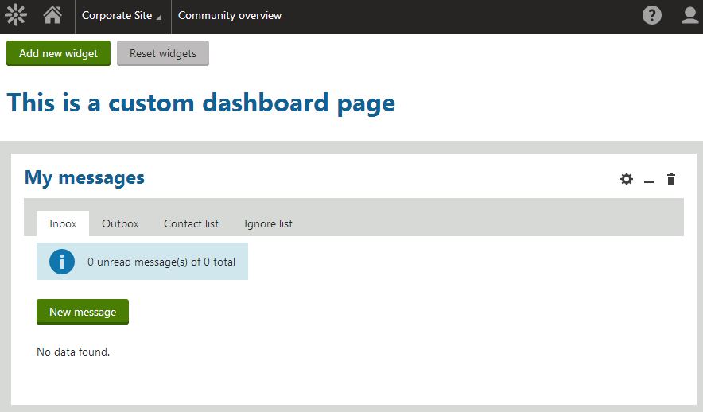

Adding widget dashboards to the interface
If the default widget dashboards in the administration interface do not meet your requirements, you can create your own dashboard applications or pages.
Important: Widget dashboards are a completely separate feature from the system's main application dashboard. Every widget dashboard is either a standalone application, or a page within another application.
The following example demonstrates how to add a custom dashboard application to the Social & Community category. You can apply the same principles when creating widget dashboards in other locations.
Creating the dashboard page template
First, create a page template for the dashboard:
Open the Page templates application.
Select the Dashboard pages category in the tree.
Click New template and enter the following values:
Template display name: Community dashboard
Template code name: CommDashboard
Click Save.
Select Dashboard page as the Template type.
Click Save.
Adjust the layout of the page template:
Switch to the Layout tab.
Copy the following sample code into the layout to define web part/widget zones for the template:
<table border="0"width="100%"cellspacing="0"cellpadding="0"><tr><td colspan="2"><divclass="DashboardActions PageTitleHeader"><cms:CMSWebPartZone ID="zoneTop"runat="server"/></div></td></tr><tr><td colspan="2"><cms:CMSWebPartZone ID="DashboardTop"runat="server"/></td></tr><tr valign="top"><td style="width:50%"><cms:CMSWebPartZone ID="DashboardLeft"runat="server"/></td><td style="width:50%"><cms:CMSWebPartZone ID="DashboardRight"runat="server"/></td></tr></table>Click Save.
Switch to the Design tab.
Expand the menu (
 ) of the DashboardTop zone and click Configure.
) of the DashboardTop zone and click Configure.Switch the Widget zone type property from None to Dashboard.
Click Save & Close.
Repeat the steps 5 – 7 for the DashboardLeft and DashboardRight zones.
Add web parts and widgets to the zones:
Add the Widget actions web part into the ZoneTop zone.
Configure the following properties of the Widget actions web part:
Widget zone type: Dashboard
Widget zone ID: Leave empty (Designates the zone where new widgets are created when users click the Add widget button. By default, the web part uses the first available zone (DashboardTop in this case), but you can specify the ID of any other dashboard zone.)
Leave the remaining properties in their default state and click Save & Close.
Add the Static text web part to the same zone and set the following properties:
Text: This is a custom dashboard page
Display as: Header level 2
Click Save & Close.
Expand the menu (
) of the DashboardTop zone and click Add new widget.For example, choose the Community -> My messages widget.
Confirm the dialogs without making changes and leave the other two dashboard zones empty.
This sets the default content of the dashboard that individual users can later configure and expand.
Preparing the design and default content of a dashboard template
Adding the dashboard UI element
To create a new widget dashboard application, you need to add a UI element to the system:
Open the Modules application.
Edit (
 ) the Custom module. Note that the Module code name is cms.customsystemmodule on the General tab.
) the Custom module. Note that the Module code name is cms.customsystemmodule on the General tab.Switch to the User interface tab.
Select the CMS -> Administration -> Social & Community element in the tree.
Click New element (
 ).
).Enter the following values:
Display name: Community overview
Code name: CommDashboardElement
Module: Custom
Caption: Community overview
Element icon type: Class
Element icon CSS class: icon-app-content-dashboard
Type: URL
Target URL: ~/CMSGlobalFiles/CommDashboard.aspx?dashboardName=Comm&templateName=CommDashboard&{hash}
Sets the URL of the page with the content of the UI element. You will create the source file used in the URL above later in the example. When creating links to dashboard pages, you need to understand and correctly specify the query string parameters:dashboardName - sets a name for the dashboard to ensure uniqueness in cases where multiple dashboards use the same page template. The content of a dashboard is unique for every user. If two or more dashboards share a page template and the dashboardName parameters in the URLs used to access the page have the same value, changes made to one of the dashboards also affect the other dashboards (for the given user and site).
templateName - specifies the code name of the page template that the dashboard is based on. The type of the assigned template must be Dashboard page. This example uses the template created in the previous steps.
hash - the system automatically generates a hash code for the element
Click Save.
When adding applications to the interface of an actual live website, you can set a macro condition in the Content permissions field to define security requirements for access to the application.
The system creates the new UI element.

Defining a UI element representing a widget dashboard
Creating the dashboard page source file
Now you need to develop the .aspx file of the dashboard page in your web project:
Open your website in Visual Studio.
Create a New folder under the root called CMSGlobalFiles (if it does not already exist).
Right‑click the folder and select Add -> Add New Item.
Select the Web Form template and enable the Select master page option.
Name the web form CommDashboard.
This is the file specified in the Target URL of the previously created UI element. The location ensures that the system exports the file with any site that includes global folders in the export package.
Select ~/CMSMasterPages/UI/Dashboard.master as the master page.
Modify the page's markup to match the following:
<%@ Page Language="C#"AutoEventWireup="true"MasterPageFile="~/CMSMasterPages/UI/Dashboard.master"CodeFile="CommDashboard.aspx.cs"EnableEventValidation="false"Inherits="CMSGlobalFiles_CommDashboard"Theme="Default"%><%@ Register Src="~/CMSModules/Widgets/Controls/Dashboard.ascx"TagName="Dashboard"TagPrefix="cms"%><asp:Content runat="server"ID="cplcContent"ContentPlaceHolderID="plcContent"><cms:Dashboard ID="ucDashboard"runat="server"ShortID="d"/></asp:Content>The Dashboard user control handles the entire functionality of the dashboard. It processes the query string parameters from the URL used to access the page and displays the corresponding dashboard according to the specified dashboard name, page template and context‑related data such as the current site and user.
Switch to the web form's code behind.
Set the CMSGlobalFiles_CommDashboard class to inherit from DashboardPage.
Modify the class to contain the following code:
usingSystem;usingCMS.Core;usingCMS.UIControls;[UIElement(ModuleName.CUSTOMSYSTEM,"CommDashboardElement")]publicpartialclassCMSGlobalFiles_CommDashboard : DashboardPage{protectedoverridevoidOnInit(EventArgs e){base.OnInit(e);// Sets up the dashboard and ensures it has unique content for each siteucDashboard.SetupSiteDashboard();}protectedvoidPage_Load(objectsender, EventArgs e){// Security access checks for the current user}}Save both files. If your installation is a web application, Build the CMSApp project.
Result
Users can now access the Community overview application either through the application list or the application dashboard (if you add the application to the roles of users).
Custom widget dashboard application in the application launcher
The page displays a fully functional dashboard based on the created page template.

Custom widget dashboard page